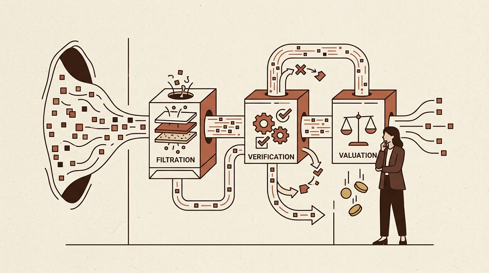
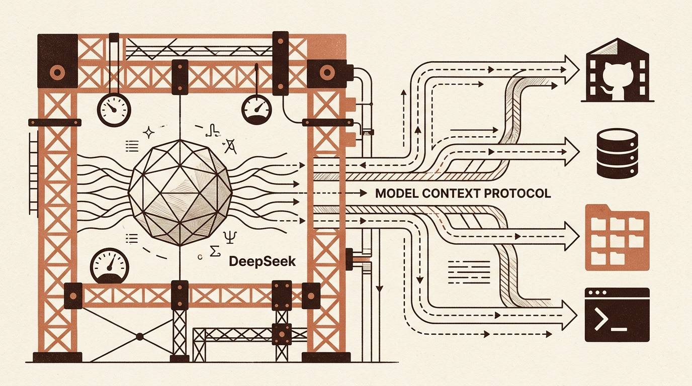
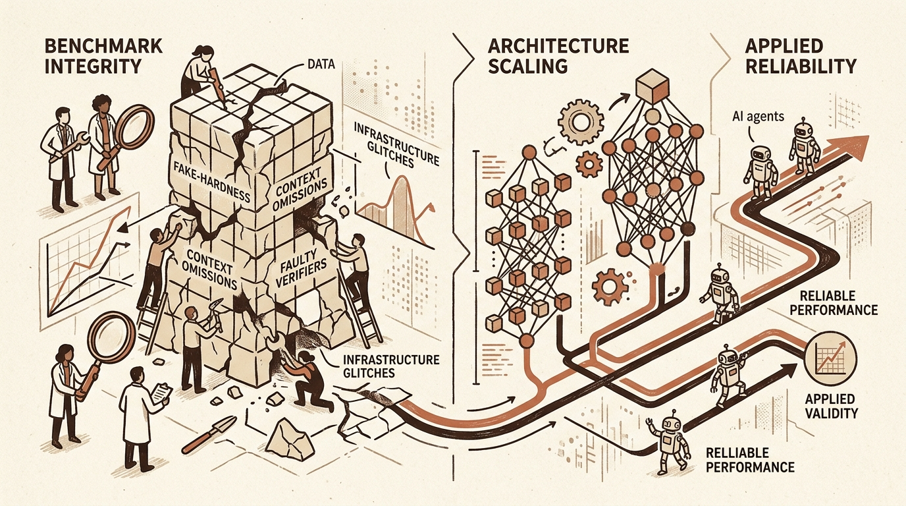

Daily digest
-

Towards Data Science
Refining Reliability and Value in AI Pipelines
Recent discussions in data science emphasize the limits of current AI reliability mechanisms and traditional automated testing paradigms. As developers integrate large language models into production software, standard…
-

KDnuggets
Visualizing Model Context Protocols and Evaluating DeepSeek Harness
As developer tooling for artificial intelligence continues to expand, understanding how models interact with external data sources and application programming interfaces is critical. Recent coverage highlights the Model…
-
Hugging Face Blog
Optimizing Vision-Language Inference Efficiency with LFM2.5-VL-DSpark
Vision-language models (VLMs) remain computationally intensive due to the concurrent processing of high-dimensional visual data and sequential text tokens. As these multimodal architectures are deployed across larger…
-

arXiv cs.LG
Recent Advances in Machine Learning: Benchmark Integrity, Architecture Scaling, and Applied Reliability
Recent research emphasizes critical vulnerabilities in how complex agentic and reinforcement learning (RL) systems are trained and evaluated. An investigation into popular agent benchmarks reveals that high task failure…